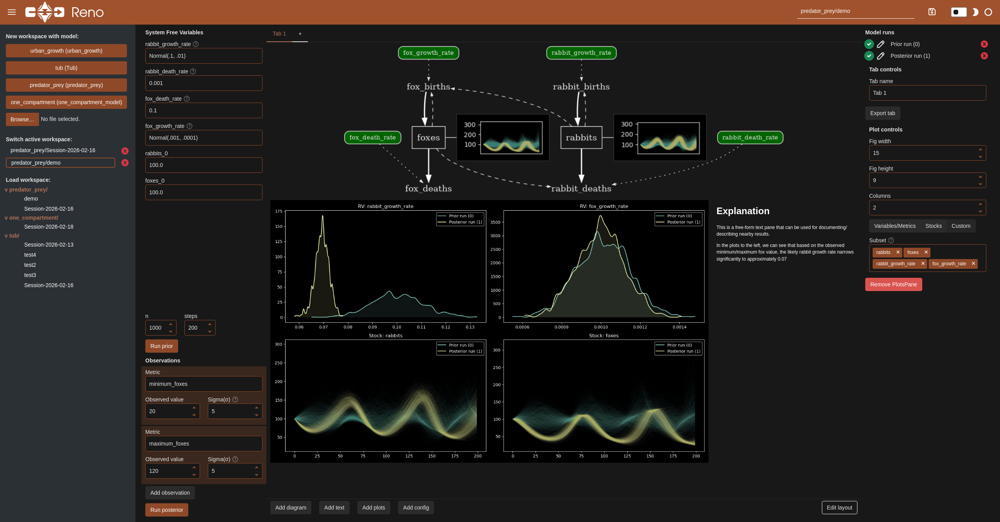
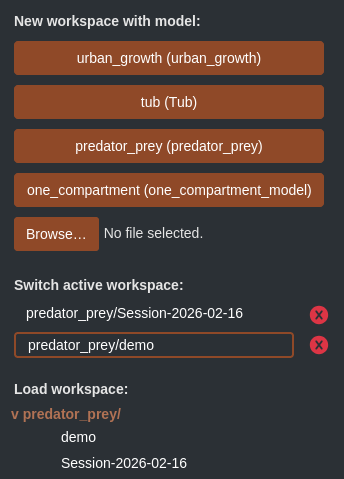
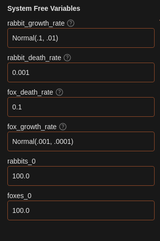
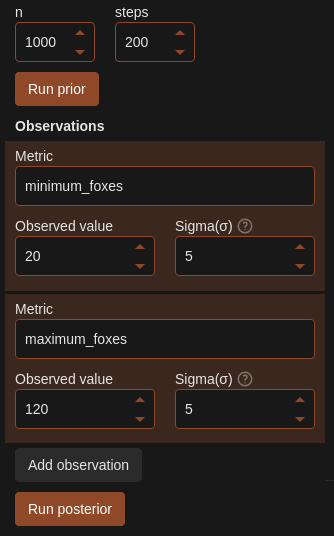
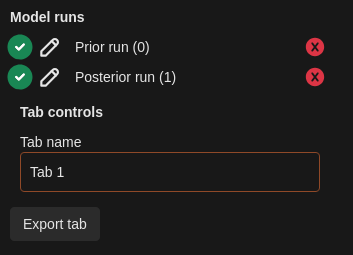
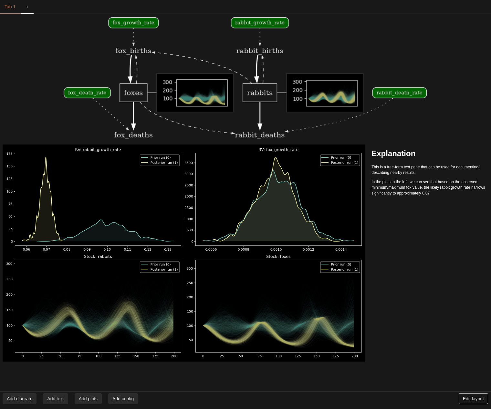
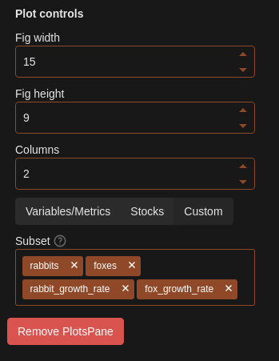

Model Explorer UI#
Reno comes with a Panel web application for experimenting with models and constructing mini narrative dashboards around specific results.

Running#
Reno installs with a reno command, which runs the panel server (by default on port 5006)
The full set of CLI args can be found by running reno -h:
usage: reno [-h] [--version] [--workspace-path WORKSPACE_PATH] [--url-root-path ROOT_PATH] [--port PORT] [--address ADDRESS] [--liveness-check] [--websocket-origin WEBSOCKET_ORIGIN]
options:
-h, --help show this help message and exit
--version Print out Reno library version.
--workspace-path WORKSPACE_PATH
Where to store and load saved explorer workspaces and models from.
--url-root-path ROOT_PATH
Root path the application is being served on when behind a reverse proxy.
--port PORT What port to run the server on.
--address ADDRESS What address to listen on for HTTP requests.
--liveness-check Flag to host a liveness endpoint at /liveness.
--websocket-origin WEBSOCKET_ORIGIN
Host that can connect to the websocket, localhost by default.
The --workspace-path argument refers to a cache or save directory to use for
persisting a particular workspace session/explorer views. By default this is set to
./work_sessions. Inside the workspace path directory, any Reno model files
saved within the models/ directory will populate new workspace buttons in the
upper left of the interface to allow quickly starting new workspace.
To populate this directory with Reno’s packaged example models, one could run:
python -c "from reno.examples.lotka_volterra import predator_prey; predator_prey.save('work_sessions/models/predator_prey.json')"
python -c "from reno.examples.one_compartment import one_compartment_model; one_compartment_model.save('work_sessions/models/one_compartment.json')"
python -c "from reno.examples.tub import tub; tub.save('work_sessions/models/tub.json')"
python -c "from reno.examples.urban_growth import urban_growth; urban_growth.save('work_sessions/models/urban_growth.json')"
Interface#
Workspace management#

The left sidebar contains three sections for creating, switching, and loading
workspaces. A workspace is an individual exploration interface for a particular
model. The buttons along the top (corresponding to any found models in the
workspace directory models/ folder) create a new active workspace for the
specified model. A new model can be uploaded and used by clicking on the browse
button and selecting your local model json file.
Active workspaces are all workspaces currently open in memory - this middle section can be used for switching back and forth between several models or explorations. Use the x buttons to close them out. Note that workspaces are not automatically saved, so be sure to use the save button in the top right in the header of the interface. (The textbox to the left of this button can be used for changing the path and name of the saved session.)
Any previously saved workspace shows up in a file-explorer-like view in the bottom of the workspace management section. Clicking on any of these will reload that workspace into your active workspaces, and populate the main view.
Model configuration#

Parameterizing the model is done in the System Free Variables section. Every
free variable/initial stock condition gets a corresponding textbox. Anything
entered here can be parsed into direct values like 42, 13.7, any string of
Reno’s lisp-like equation syntax such as (+ 2 3) (this syntax is shown on the Math in Reno page, and corresponding syntax for any given operation is listed on the
corresponding op page from reno.ops, labeled as “String notation”), or
directly referring to any distribution class and parameters, such as
Normal(13.0, std=1.0).
Sampling and observations#

Below the model configuration are sampling parameters, buttons to execute simulation runs, and a section for adding observations.
The n and steps boxes control the number of samples run and how many
steps each sample is run for. The “Run prior” button will start a simulation
based only on prior probability distributions - it will ignore any entered
observed data.
The “Add observation” button creates a new set of fields where you can select a metric to specify an observation for, along with the observed value itself and the sigma or uncertainty around the value. (See Bayesian Inference for more details on this process.)
The “Run posterior” button will run the Bayesian inference process and output updated probability distributions for the provided observations.
Model runs and tab controls#

The right upper side of the interface contains a list of all previous prior/posterior simulation runs, along with toggle buttons to select or deselect them for visualizations within the current tab, edit buttons to modify the name of the run (this is reflected in the legends of the plots), and the ability to delete specific runs. Additionally, the name of the tab can be modified here.
The “Export” button generates both a PDF and raw HTML file containing the contents of the current tab, and will display buttons for downloading both of these.
Tab contents#

The main section of the view is a tabbed interface where the user can add visualization types and customize their layout. Visualizations or “panes” can be added by clicking on their corresponding type button in the bottom controls row. Panes can be resized and moved around by toggling the “Edit layout” button and clicking and dragging.
Pane configuration#

Clicking on any pane within the tab contents populates the bottom right with controls to configure the selected pane. This is different for each pane type, but for the selected plots pane, the user can control the grid size of the plots and select the subset of variables from the model to include.